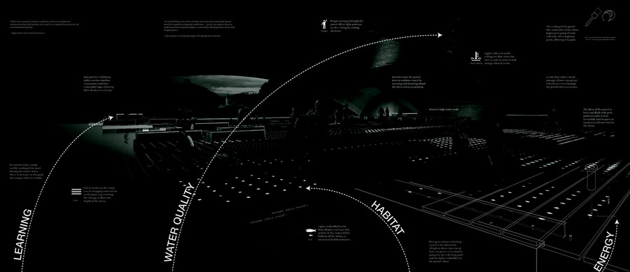

…our managerial posture demands that all of life be displaced to a condition beyond the natural and the artificial, to an ontological plane where such distinctions no longer make sense, and can no longer interfere with the choreographing of matter.
John May — The Logic of the Managerial Surface
Cyborg Ecologies
The current condition of the anthropocene is one of ecological hybridity, an evolved state where constructed megaliths exist within noisy gradients of the pseudo-natural. These landscapes — the hybridized territories — are the product of the exertion of civil engineering, environmental management, and the pressures of urbanization. Where does the discipline of landscape architecture find its footing in the ecologically complex and technologically abstract realm of contemporary society? To confront the intractable issues of the anthropocene it is necessary to unpack the technologies that operate at the scale of the territory — simulation, sensing, logistics, biological engineering, and technological interface — to question the dichotomy of the constructed and the natural. To engage the territory requires the application of reflexive and responsive technologies, to form new relationships through simulation, sensing, and feedback, and to embrace novel ecological systems. These novel forms of ecology demand a deconstruction of current forms of settlement, infrastructure, and biological systems to understand the constructed landscape as a synthesizer of biotic and abiotic processes.“Cyborg Ecologies posits that the role of landscape architecture as implementers of new technologies is to promote active and real-time methods of environmental stewardship and management.”

About the seminar
EcoTech IV is a graduate seminar in responsive and cyborg ecologies. The course offers an overview of landscape infrastructural systems through lectures, workshops, and student research at various scales, and promotes a projective view of the implementation of and interaction with nascent technologies for simulation, monitoring, and automation.
Faculty: Bradley Cantrell, Professor and Chair. Teaching Assistant (2019): Thatch Gerike, MLA 2020. Meeting: Wednesday, 9:00–11:30.
This page documents the LAR 7214 (Spring 2019) and LAR 7220 (Spring 2020) iterations of EcoTech IV.